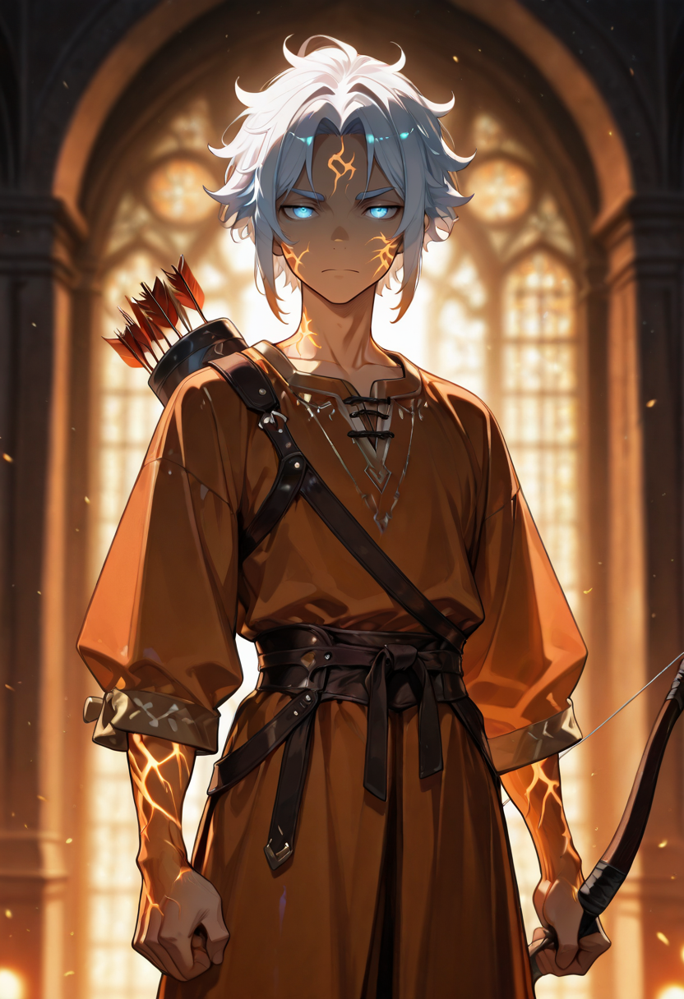

The Calculation Is Not Romantic
The Marksman does not think of shooting as an art. He thinks of it as applied mathematics: wind resistance, target velocity, angle of projection, anticipated movement, atmospheric humidity. You put the numbers in, you get a result. The result is a projectile arriving where you intended it to arrive. Romance is what people who miss invoke to explain the miss.
He was, in life, a siege engineer at the crossbow specialist level , someone employed specifically to make precision shots at high-value targets during extended military operations. He was not a soldier. He was a consultant. He submitted invoices and everything. The invoices were extremely precise, which, in retrospect, should have told people something about his character.
In the Sentinelle he is the apex of the precision path before the elf specialists. This is not something he takes pride in. It is simply an accurate description of his position in the formation's capability hierarchy, and he appreciates accuracy in all its forms. He and the Noble have a professional relationship that functions entirely through mutual technical respect and near-complete personality incompatibility. It works.
Tactical Data
Precision Shot
BasePiercing Round
ActiveCold Eye
PassiveGallery